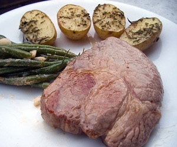

Ormalinger Schweinehalssteak von der Farnsburg
5 von 6Steak bei starker Hitze pro Seite ca. 3-5 Minuten braten. Mit Salz und Pfeffer abschmecken.

Steak bei starker Hitze pro Seite ca. 3-5 Minuten braten. Mit Salz und Pfeffer abschmecken.

Montagsplausch Nr. 199. Der Abend hiess «Ormalinger Schweinehalssteak».